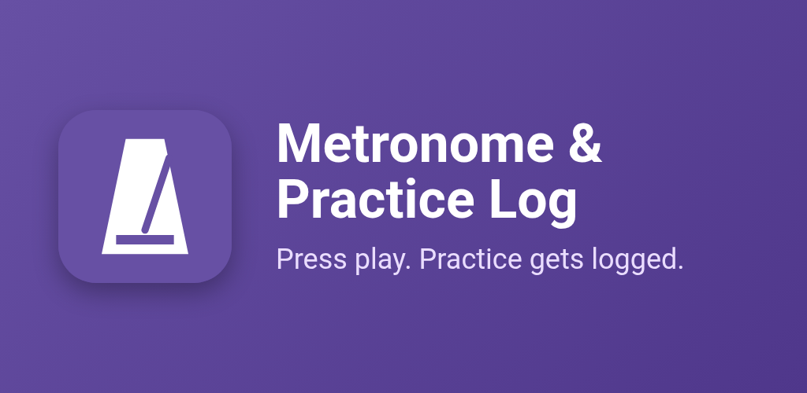
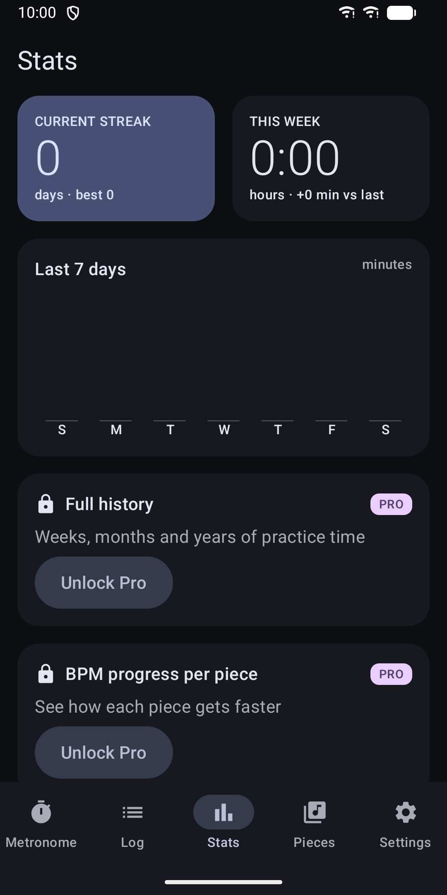
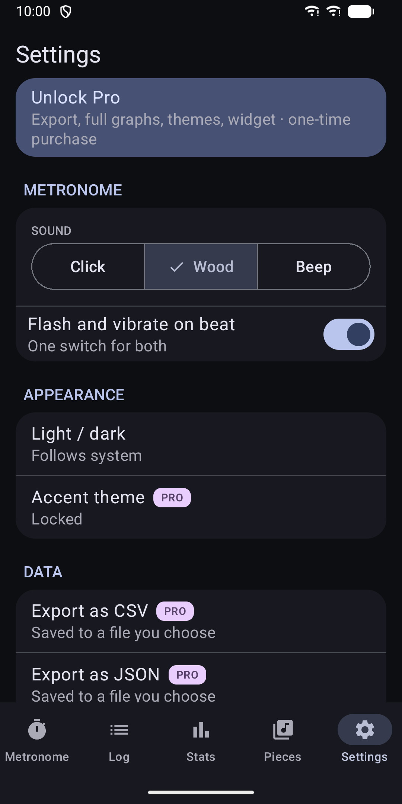

Metrónomo y Diario de Práctica
Metrónomo que registra tu práctica automáticamente y cuenta tu racha





Acerca de la app
Pulsa play y practica. Metrónomo y Diario de Práctica marca el tempo y escribe tu diario de estudio por ti. UN METRÓNOMO EN EL QUE PUEDES CONFIAR - Tempo de 30 a 300 BPM con botones grandes de menos y más, deslizador y tempo por toques - Compases 2/4, 3/4, 4/4, 5/4 y 6/8, con acentos que defines para cada tiempo - Tres sonidos: clic, madera y pitido - Destello de pantalla y vibración en cada tiempo, con un solo interruptor para ambos - Ritmo estable en segundo plano y con la pantalla apagada, con una notificación para pausar REGISTRO DE PRÁCTICA SIN TOQUES EXTRA - Una sesión empieza al pulsar play y termina al pausar - Las sesiones de menos de 30 segundos se ignoran - Asigna una obra o registra en "General" - Cada sesión guarda su compás, tu último tempo y el tempo medio ponderado por tiempo - Edita o elimina cualquier sesión, con deshacer - Añade, renombra y elimina tus obras VE TU PROGRESO - Racha diaria: cuenta cada día con al menos un minuto de práctica - Gráfico de barras de los últimos 7 días PRO (COMPRA ÚNICA) Estas funciones requieren la compra de Pro: - Exporta tu registro como CSV o JSON a un archivo que elijas - Gráficos completos: 12 semanas de tiempo de práctica y progreso de tempo por obra - Temas de color - Widget de pantalla de inicio con tu racha, el tiempo de hoy y los últimos 7 días El metrónomo, el registro automático, las rachas y el gráfico de 7 días funcionan sin Pro. TUS DATOS SE QUEDAN EN TU DISPOSITIVO - La app no tiene permiso de Internet - Sin cuenta, sin analíticas, sin informes de errores - Sin copia de seguridad en la nube de tus datos de práctica. Se quedan en este dispositivo salvo que los exportes. FÁCIL DE USAR - Sigue el modo claro u oscuro del sistema - Compatible con TalkBack: los controles tienen etiqueta, el tempo es un único control ajustable y los gráficos tienen un resumen hablado - Zonas táctiles grandes para usar rápido en el atril - Diseños para móvil y tableta. En tabletas, el metrónomo y tu registro van lado a lado. Contacto: apps@schimpf.es